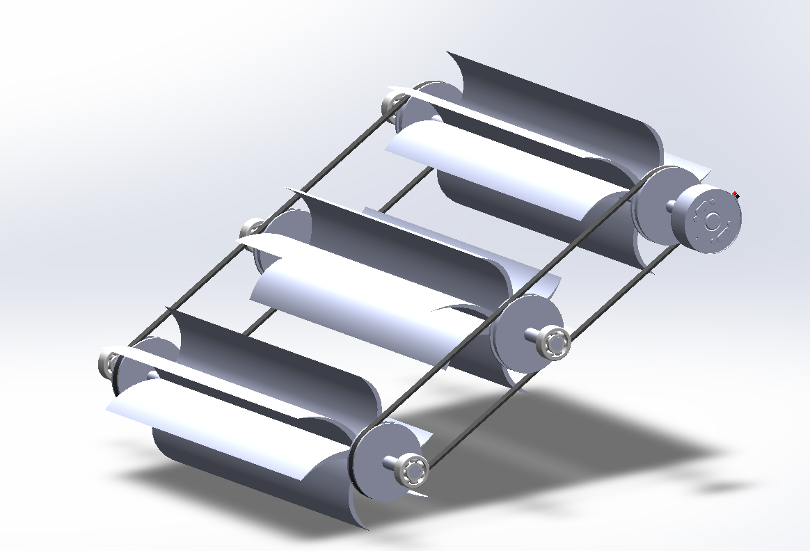
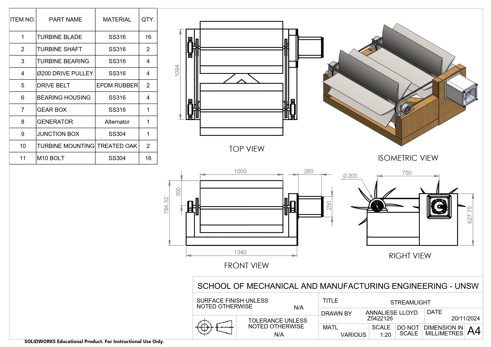

Provide rural populations with limited access to traditional
electrical infrastructure dependable renewable energy.
DESN2000: Engineering Design and Professional Practice
StreamLight is a conceptual modular hydroelectric power system designed to provide reliable renewable energy for rural communities with limited access to conventional electricity infrastructure.
The project focused on developing a scalable and maintainable hydroelectric solution capable of operating in remote environments while minimising installation complexity and long-term maintenance requirements.
Many rural communities face challenges accessing reliable electricity due to geographical isolation, infrastructure costs, and limited access to traditional power-generation systems.
The objective was to develop a renewable energy solution capable of generating continuous electrical power using naturally occurring river systems while remaining affordable, scalable, and practical to deploy in remote environments.
Drawing ideas to communicate geometry, assembly sequence, and manufacturing requirements.

Early-stage concept generation to explore three turbines, balancing power output against efficieny and manufacturing.

📄 View PDFDetailed assembly and manufacturing drawings developed during concept refinement.
Concept video to demonstrate final construction and in operation.
Developed a conceptual modular hydroelectric system capable of generating electrical power from flowing water without requiring major infrastructure.
The final design incorporated a modular frame, impulse-style turbine system, and generator integration strategy supported by CAD models, engineering drawings, and technical justification.
This project strengthened my understanding of systems-level engineering design and reinforced the importance of balancing technical performance with real-world implementation constraints.
I gained experience applying structured design methodologies while considering stakeholder needs, manufacturability, maintainability, and sustainability within a single engineering solution.